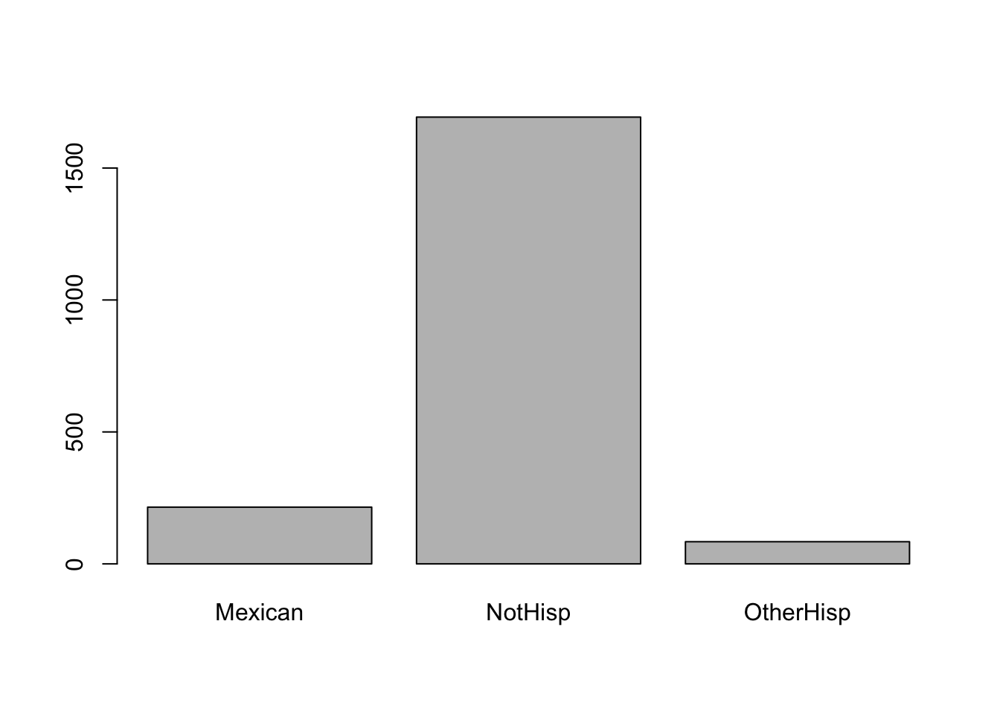
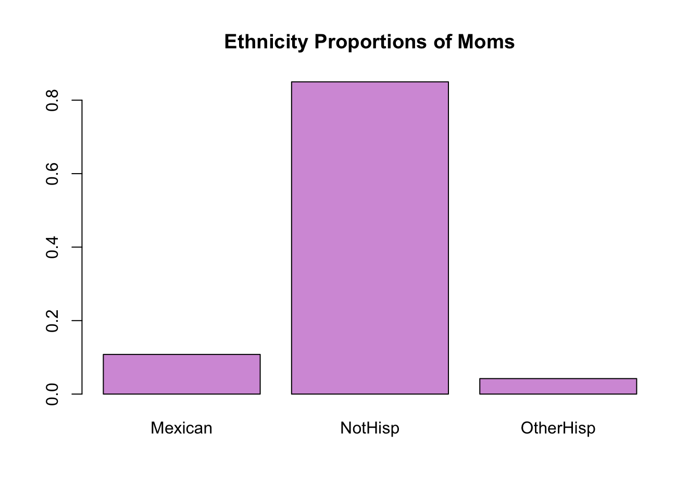
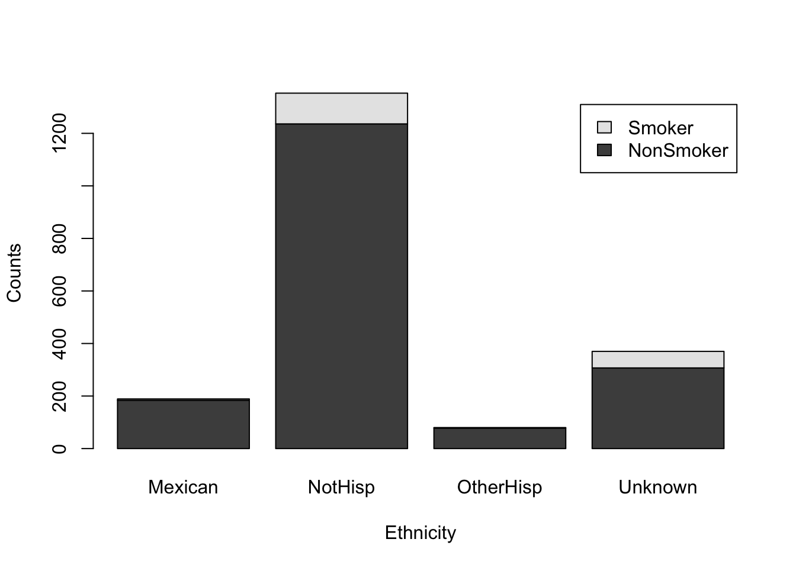
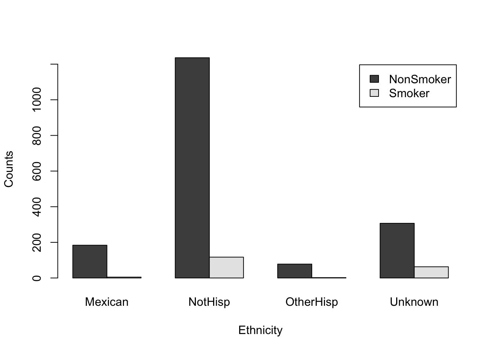
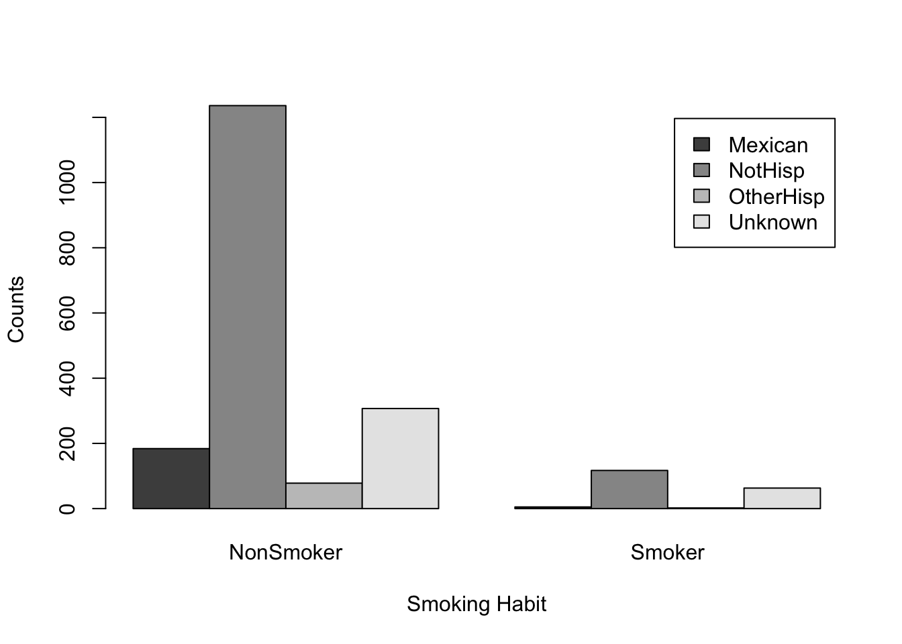
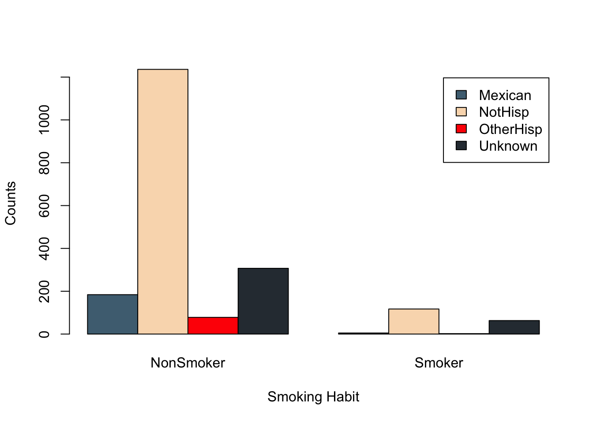

We will use the births data set to summarize and visualize categorical variables using the base R approach
Categorical data is a type of data that is divided into categories or groups, such as hair color or education level. Categorical data can be further divided into nominal data, which is data that has no inherent order, such as hair color, and ordinal data, which is data that has a defined order, such as education level
Single categorical variable
One way to extract all the character columns is using both Filter and is.character functions. A similar argument can be said for any columns that are factors, but instead we’d use is.factor.
Below are the first five rows of all the character columns in birth_dat
Filter(is.character,birth_dat) Gender Premie Marital Racemom Racedad Hispmom Hispdad Habit
1 Male No Married White White NotHisp NotHisp NonSmoker
2 Female No Unmarried White White Mexican Mexican NonSmoker
3 Male No Unmarried White Unknown Mexican Unknown NonSmoker
4 Female No Unmarried White White NotHisp NotHisp NonSmoker
5 Male No Married White Black NotHisp NotHisp NonSmoker
MomPriorCond BirthDef DelivComp BirthComp
1 None None At Least One None
2 None None At Least One None
3 At Least One None At Least One None
4 None None At Least One None
5 At Least One None None NoneThe names of the character columns can be obtained using colnames() function in combination with the above statement
colnames(Filter(is.character,birth_dat) ) [1] "Gender" "Premie" "Marital" "Racemom" "Racedad"
[6] "Hispmom" "Hispdad" "Habit" "MomPriorCond" "BirthDef"
[11] "DelivComp" "BirthComp" We will only consider the Hispmom variable from our dataset to demonstrate methods to summarize and visualize a character variable.
First, we’ll save the values from Hispmom column into a separate variable and compute several categorical summaries
hispanic_mom <- birth_dat$HispmomThe table() function in R can be used to quickly create frequency tables.
table(hispanic_mom)hispanic_mom
Mexican NotHisp OtherHisp
215 1693 84 From the above frequency table we observe there were 25 mom who were Mexican, 1693 non Hispanic, and 84 were other types of Hispanic. We can easily convert the frequency table into a frequency table of proportions using prop.table(). The input for prop.table() is a table created using table().
prop.table(table(hispanic_mom))hispanic_mom
Mexican NotHisp OtherHisp
0.10793173 0.84989960 0.04216867 Now, we observe roughly 10.79% of moms were Mexican, 84.99% were non Hispanic and 4.22% were other types of Hispanic. Note that all of the proportions should add up to 1.
sum(prop.table(table(hispanic_mom)))[1] 1While the above method works, it is not the only way to obtain frequency tables. We can obtain the same results using tally() from the mosaic library.
mosaic::tally(hispanic_mom)X
Mexican NotHisp OtherHisp
215 1693 84 If we want frequency tables of proportions, we need to use the argument format and specify format = 'proportion'. There are other formats such as 'count', 'percent' etc.. for more details run ?mosaicCore::tally()
mosaic::tally(hispanic_mom,format='proportion')X
Mexican NotHisp OtherHisp
0.10793173 0.84989960 0.04216867 To plot a single categorical variable we can use barplot(). The input for barplot() when dealing with categorical data is a table, like the ones we created above
barplot(table(hispanic_mom))
Instead of the frequency counts, we can plot frequency of proportions by inputting a frequency tables of proportions.
barplot(prop.table(table(hispanic_mom)),
main = 'Ethnicity Proportions of Moms',
col = '#d59cdb')
Two categorical variables
For this example, we consider the following two character variables Hispdad and Habit. Hispdad determines whether the father of the baby was Hispanic or not. In particular, are they Mexican, non-Hispanic, or other type of Hispanic ethnicity. Habit determines whether or not the subject had a smoking habit or not.
When dealing with two categorical variables we can create a two-way table using table(v1,v2). Below is the table of frequency for both Habit and Hispdad.
Note: We save the table as a variable so we can use it later
smoker_hispanic_dad <- table(birth_dat$Habit,birth_dat$Hispdad)
smoker_hispanic_dad
Mexican NotHisp OtherHisp Unknown
NonSmoker 184 1236 78 307
Smoker 5 117 2 63From the above frequency table of counts you will notice that there were 184 Mexican dads who were non-smokers, 5 Mexican dads who were smokers, 1236 non-Hispanics who were non-smokers, 117 non-Hispanics who were smokers and similar interpretations can be made for the remaining cells.
We can obtain a table of proportions using prop.table()
prop.table(smoker_hispanic_dad)
Mexican NotHisp OtherHisp Unknown
NonSmoker 0.092369478 0.620481928 0.039156627 0.154116466
Smoker 0.002510040 0.058734940 0.001004016 0.031626506Now, lets plot the results of our table using the default barplot settings
barplot(smoker_hispanic_dad)It is difficult to understand the meaning of the black and gray filled sections of the barplot. Although we may have a general understanding that the gray portion represents smokers and the black portion represents non-smokers based on the accompanying table, we should not assume that the reader will automatically make this connection.
We can add a legend by using the argument legend.text=TRUE, and barplot will use the row names of our table to make the legend. Moreover, we add appropriate labels to our plot
barplot(smoker_hispanic_dad,
legend.text = TRUE,
xlab = 'Ethnicity',
ylab = 'Counts')
The above figure shows a stacked bar plot. If we wanted the bars next to each other, rather than on top of each other, we can use the argument beside=TRUE.
barplot(smoker_hispanic_dad,
legend.text = TRUE,
beside = TRUE,
xlab = 'Ethnicity',
ylab = 'Counts')
It is evident that the number of non-smokers exceeds that of smokers across all ethnicities. However, we may be able to obtain a more comprehensive understanding of the data by altering the grouping order of the bars. Specifically, we should examine which ethnic group has a higher count for each smoking category.
We can change the order of our table by taking the tranpose, that is we swap the columns and rows. In R, we can transpose any table-like object using the function t()
t(smoker_hispanic_dad)
NonSmoker Smoker
Mexican 184 5
NotHisp 1236 117
OtherHisp 78 2
Unknown 307 63From this point of view, we can observe the number of counts in each smoking habit category for each ethnicity. For example, there were 184 Mexican fathers who are non-smokers and 5 Mexican fathers that did smoke. Similar, interpretations can be made for other ethnic groups.
We can now use barplot on this new transposed table
barplot(t(smoker_hispanic_dad),
legend.text = TRUE,
beside = TRUE,
xlab = 'Smoking Habit',
ylab = 'Counts')
We can clearly see the non-Hispanic fathers make up the highest counts for non-smokers and smokers. While the default color palette is color-blind friendly it can be hard to distinguish the categories based on these colors.
With a quick google search of “four color palettes” you can find great palettes for 4 categories. For example, the following color palette was obtain from colorhunt.co
barplot(t(smoker_hispanic_dad),
legend.text = TRUE,
col =c('#4E6E81','#F9DBBB','#FF0303','#2E3840'),
beside = TRUE,
xlab = 'Smoking Habit',
ylab = 'Counts')